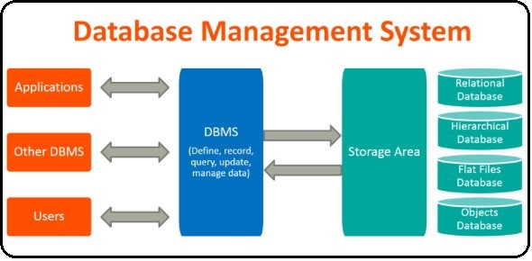

A database is a collection of related data which represents some aspect of the real world. A database system is designed to be built and populated with data for a certain task.
Database Management System (DBMS) is a software for storing and retrieving users’ data while considering appropriate security measures. It consists of a group of programs which manipulate the database. The DBMS accepts the request for data from an application and instructs the operating system to provide the specific data. In large systems, a DBMS helps users and other third-party software to store and retrieve data. DBMS allows users to create their own databases as per their requirement. The term “DBMS” includes the user of the database and other application programs. It provides an interface between the data and the software application.
